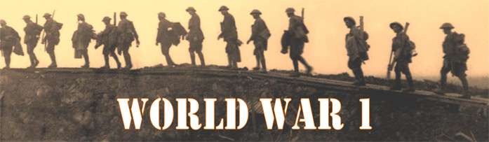
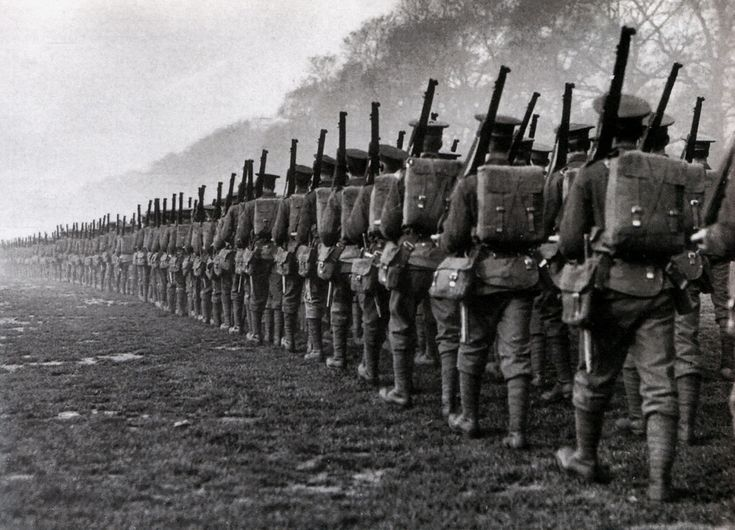

The first battle of Ypres
How it started:
After Germany's defeat at the Battle of the Marne (September 6–12, 1914) and the stalemate on the Aisne, both sides attempted to resume the war. This resulted in a "run to the sea", in which Allied and German forces simultaneously attempted to turn against the enemy's northern flank. (S. Jones, 2015)

Ypres therefore became the focal point of the event due to its location and as a transport hub. In October, the German army began a large-scale offensive with the aim of advancing on the ports of Dunkirk and Pas de Calais. To achieve these objectives, Ypres must be captured. This led to the First Battle of Ypres (19 October to 22 November 1914). (S. Jones, 2015)

The confrontation pitted the German Fourth and Sixth Armies against the French VIII Army, the British Expeditionary Force and the Belgian Army.
Back
Next